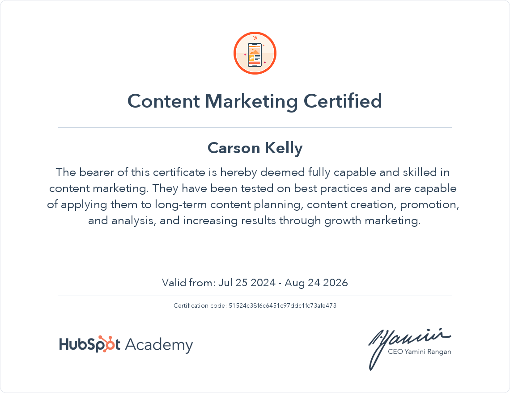

About
Carson Kelly (she/her) is a cum laude graduate of the University of Massachusetts Amherst, where she earned dual Bachelor of Arts degrees in Communication and Dance. She currently serves as Associate Marketing Communications Manager at XiFin, leading integrated marketing communications across content, digital channels, webinars, and events to strengthen brand visibility and thought leadership.
With experience spanning social media strategy, event marketing, and international communications work in Italy, Carson brings a strategic and creative approach to building high-impact marketing programs. She is certified in Content Marketing through HubSpot Academy, has completed its AI for Marketers course, and holds dual citizenship in the United States and Ireland.
Certifications and coursework
- HubSpot Academy: Content Marketing Certification
- HubSpot Academy: AI for Marketers Course
- Relevant Coursework: Practical Reasoning, Film and TV Production Concepts, Social Impact of Mass Media
